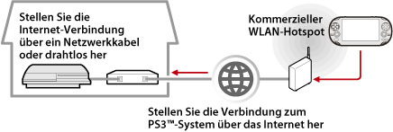

Netzwerk > Verwenden von Remote Play (über Internet)
Verwenden von Remote Play (über Internet)
Wenn Sie diese Funktion auf einem PS Vita-System oder PSP™-System nutzen wollen, müssen Sie möglicherweise die System-Software des PS3™-Systems und des PS Vita-Systems oder PSP™-Systems aktualisieren.
Wenn Sie ein Gerät, das Remote Play unterstützt, wie z. B. ein PS Vita-System oder das PSP™-System, und einen WLAN Access Point verwenden, können Sie über das Internet eine Verbindung zu Ihrem PS3™-System herstellen. Wenn Sie Remote Play verwenden wollen, muss das PS3™-System in den Bereitschaftsmodus für die Remote Play-Verbindung geschaltet sein.

Anmerkung
Die Verwendung eines kommerziellen WLAN-Hotspot-Dienstes und die Tarife sind providerabhängig. Kontaktieren Sie Ihren Service Provider für weitere Informationen.
Vorbereitungen (1) (PS3™-System und Gerät, das Remote Play unterstützt)
Wenn Sie Remote Play zum ersten Mal verwenden, müssen Sie das Gerät, das Remote Play unterstützt, wie z. B. ein PS Vita- oder PSP™-System, beim PS3™-System registrieren (ein Pairing durchführen). Zum Registrieren des Systems (Pairing) wählen Sie  (Einstellungen) >
(Einstellungen) >  (Remote-Play-Einstellungen) > [Gerät registrieren].
(Remote-Play-Einstellungen) > [Gerät registrieren].
Vorbereitungen (2) (Gerät, das Remote Play unterstützt)
Erstellen Sie eine Netzwerkverbindung, um das PS Vita-System oder PSP™-System mit einem Access Point zu verbinden. Um Remote Play über das Internet zu verwenden, können Sie einen drahtlosen Access Point verwenden. Einzelheiten zu den Netzwerk-Einstellungen auf einem Gerät, das Remote Play unterstützt, finden Sie in der mit dem Gerät gelieferten Bedienungsanleitung.
Verwenden von Remote Play auf einem PS Vita-System
1. |
Wählen Sie auf einem PS3™-System |
|---|
 (Netzwerk) >
(Netzwerk) >  (Remote Play).
(Remote Play).2. |
Tippen Sie an Ihrem PS Vita-System auf |
|---|
 (PS3 Remote Play) > [Starten].
(PS3 Remote Play) > [Starten].3. |
Tippen Sie auf [Verbindung über das Internet]. |
|---|
Anmerkungen
- Wenn Sie während Remote Play zum Bildschirm für eine andere Anwendung wechseln, endet die Remote Play-Verbindung nach 30 Sekunden.
- Stellen Sie am PS Vita-System eine Verknüpfung zum Sony Entertainment Network-Konto her, das auf dem PS3™-System verwendet wird. Wenn Sie auf dem PS Vita-System oder einem Computer ein Konto erstellt haben, können Sie dieses Konto auch auf dem PS3™-System verwenden.
Verwenden von Remote Play in einem PSP™-System
1. |
Wählen Sie am PS3™-System |
|---|---|
2. |
Wählen Sie am PSP™-System |
3. |
Wählen Sie [Verbindung über das Internet]. |
4. |
Wählen Sie aus der Verbindungsliste die Verbindung für den Access Point für Remote Play. |
5. |
Geben Sie die Anmelde-ID von Sony Entertainment Network und das Passwort für das verwendete Konto ein. |
 (Remote Play).
(Remote Play).Verwenden von Remote Play über Internet
Sie können möglicherweise Remote Play über Internet abhängig vom verwendeten Netzwerk nicht verwenden. Ist dies der Fall die folgenden Informationen prüfen.
- Verwenden Sie [Internetverbindungs-Test] in
 (Netzwerk-Einstellungen) unter (Einstellungen), um zu prüfen, ob das PSP™ System eine Verbindung mit dem Internet und PSNSM aufbauen kann.
(Netzwerk-Einstellungen) unter (Einstellungen), um zu prüfen, ob das PSP™ System eine Verbindung mit dem Internet und PSNSM aufbauen kann. - Falls der Router UPnP unterstützt, die UPnP-Funktion des Routers aktivieren.
- Falls der Router UPnP nicht unterstützt, müssen Sie den Port des Routers vorsetzen, damit eine Internetverbindung zum PS3™-System möglich ist. Die Portnummer für Remote Play ist TCP:9293. Information über Einrichten dieser Option finden Sie in den Router-Anweisungen.
- Mit der Funktion „Vorsetzen“ werden Signale an einem bestimmten Port (Eingang) zu einem anderen Port (Ausgang) weitergeleitet. Dies wird auch als „Port-Mapping“ und „Adresskonvertierung“ bezeichnet.
- Wenn das PS3™-System über zwei oder mehr Router mit dem Internet verbunden ist, funktioniert die Kommunikation möglicherweise nicht richtig.
Anmerkungen
- Ein Router ist ein Gerät, das mehreren Geräten die gemeinsame Nutzung einer einzigen Internet-Leitung ermöglicht.
- Verbindungen können je nach den Sicherheitseinstellungen des Routers und des Internet-Serviceproviders beschränkt sein. Schlagen Sie dazu in den mit dem verwendeten Netzwerkgerät gelieferten Anweisungen und in den Informationen von Ihrem Internet-Serviceprovider nach.